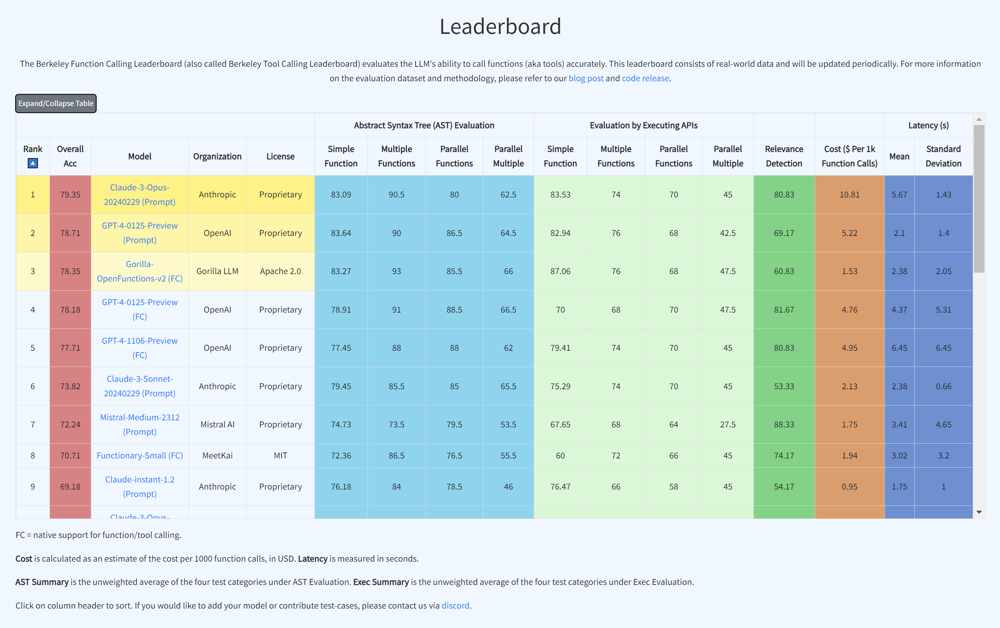
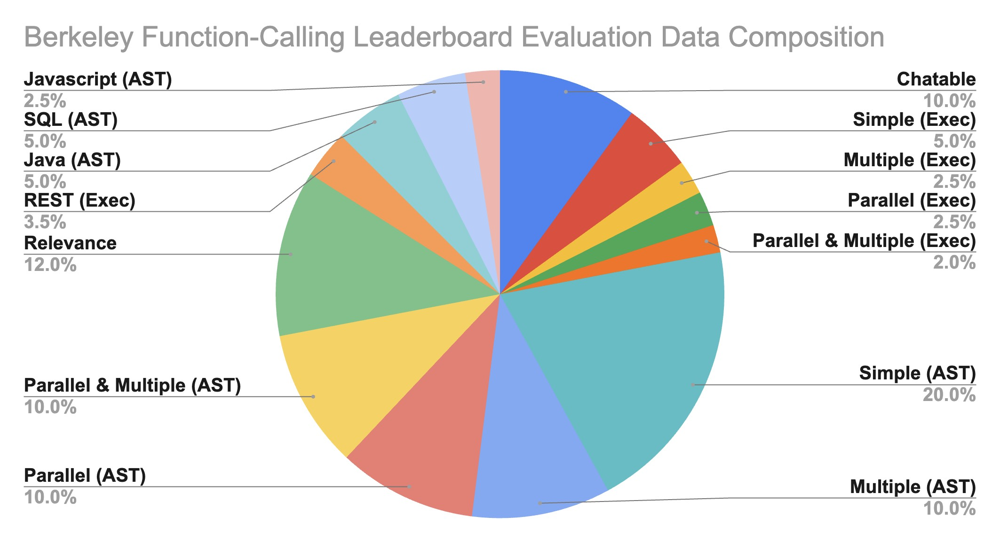
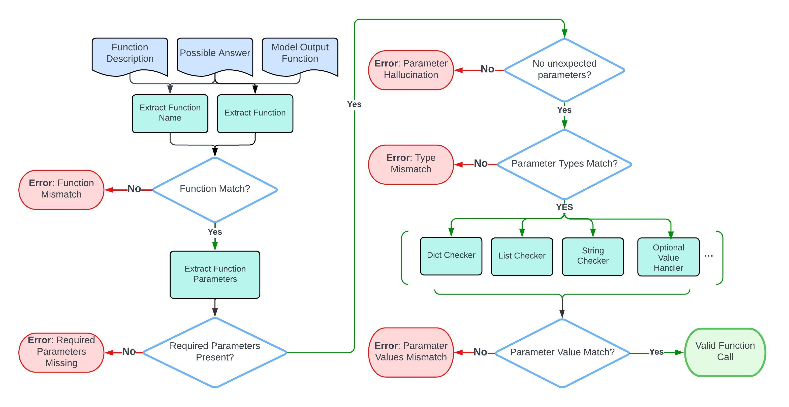
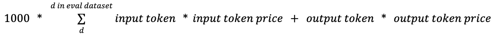
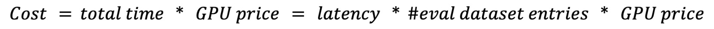
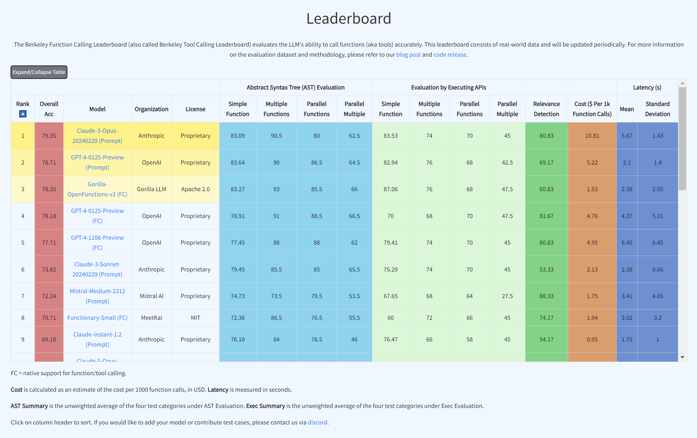
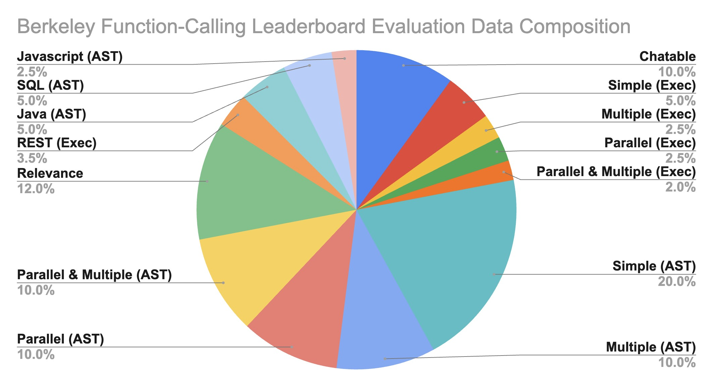
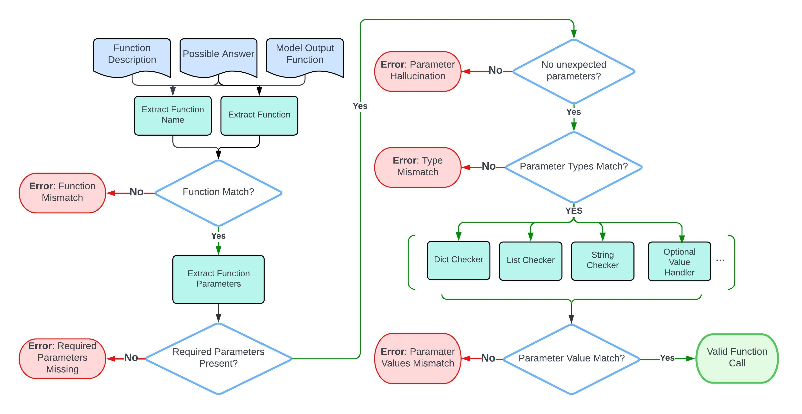
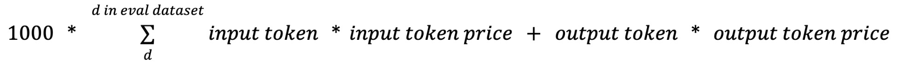
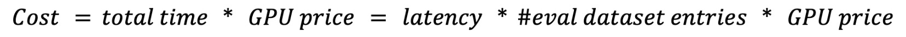

🦍 Gorilla: Large Language Model Connected with Massive APIs
Blog 8: Berkeley Function-Calling Leaderboard
Berkeley Function-Calling Leaderboard
Fanjia Yan* Huanzhi Mao* Charlie Cheng-Jie Ji* Ion Stoica Joseph E. Gonzalez Tianjun Zhang Shishir G. Patil
Beyond chatting, it is increasingly common to integrate Large Language Models (LLMs) to power many applications and software (e.g., Langchain, Llama Index, AutoGPT, Voyager). Models like GPT, Gemini, Llama, Mistral etc, have demonstrated huge potential in this direction with function calling (also called tool calling) capabilities.
We present Berkeley
Function-Calling Leaderboard (BFCL), the first comprehensive evaluation on the LLM's
ability to call functions and tools. We built this dataset from our learnings, to be
representative of most users'
function calling use-cases, for example, in agents, as a part of enterprise workflows, etc. We
consider function
calls of various forms including parallel (one function input, multiple invocations of the
function output) and multiple (multiple functions input, one function output), diverse languages
including Java, JavaScript, etc. Further, we even execute these functions to execute the models,
and we also evaluate the model's ability to withhold picking any function when the right
function is not available. And one more thing - the leaderboard now also includes cost and
latency for all the different models!
On Aug 19th, 2024, we released the BFCL V2 dataset, featuring enterprise-contributed data,
tackling issues like bias and data contamination, and focuses on dynamic, real-world scenarios.
Check out the BFCL V2 · Live Blog Post for more details.
Quick Links:
- Live Leaderboard: Website
- BFCL Evaluation Dataset: HuggingFace Dataset 🤗
- BFCL V2 Live: Blog Post
- Gradio Demo: HuggingFace Space 🤗
- Reproducibility: Github Code
- OpenFunctions-v2 (6.91B) on HuggingFace 🤗: gorilla-llm/gorilla-openfunctions-v2
Berkeley Function Calling Leaderboard 🏆
Berkeley Function-Calling
Leaderboard (BFCL) aims to provide a thorough study of the function-calling
capability of different LLMs. It consists of 2k question-function-answer pairs with multiple
languages (python, java, javascript, restAPI), diverse application domains and complex
use cases (multiple function calls where the LLM needs to select one or more functions from
multiple functions provided, and parallel function calls that the LLM needs to make multiple
function calls together). We also investigate function relevance detection, to determine how
the model will react when the provided function is not suitable to answer the user's
question (in such case an "Error Message will be provided"). In more detail, BFCL
includes 100 Java, 50 JavaScript, 70 REST API, 100 SQL, and 1,680 Python on various
simple, parallel, multiple, executable functions calling scenarios as well as function
relevance detection.
The leaderboard is shown below in the Figure, we can see that the latest checkpoint of GPT-4
(from OpenAI) leads the evaluation, with the open-source model (OpenFunctions-v2),
Mistral-medium model (from Mistral AI) and Claude-2.1 (from Anthropic) following close
behind. This blog post includes more information on the dataset, the evaluation methodology,
some common failure patterns, and more!

LLMs' performance on Berkeley
Function-Calling Leaderboard (BFCL)
To improve our understanding and visualization of the outcomes, we have introduced an
interactive wagon wheel tool that allows users to compare various models. This comparison is
organized into nine distinct categories: function relevance detection, AST (Abstract
Syntax Tree) tree analysis, and execution function call verification across simple,
multiple, and parallel multiple function scenarios. Through this approach, it becomes
evident that tests reveal unsatisfactory performance by the models. Specifically, in
simple function calling, both proprietary and open-source models exhibit comparable
performance. However, when it comes to handling multiple and parallel function calls, the
GPT-series models demonstrate superior performance over their open-source counterparts.
 Detailed analysis using Berkeley Function-Calling
Leaderboard (BFCL) Wagon Chart
Detailed analysis using Berkeley Function-Calling
Leaderboard (BFCL) Wagon Chart
Dataset Composition
The Gorilla OpenFunctions evaluation dataset grows from its previous OpenFunctions-v0's
100 data points to 2,000
data points! Beyond improvements in quality, the expanded dataset demonstrates diversity in:
- Domains of functions documentation
- Number of function documents and function call(s) pairs
- Data types of different programming languages
- Executability of real-world examples
Our evaluation JSON functions are scraped and generated from different sources of websites.
We
intentionally include domains like using functions related to
Mathematics-Algebra,
Sports-Soccer,
Finance-Mortgage,
etc. We include 40 sub-domains of functions within our
generic evaluations. This allows us to understand the model performance not just in
data-abundant domains like computing, and cloud, but also in niche domains like sports, and
law.

Berkeley Function-Calling
Leaderboard (BFCL) Data Composition
Evaluation Categories 📊
We break down the majority of the evaluation into two categories:
- Python: Simple Function, Multiple Function,
Parallel
Function, Parallel Multiple
Function
- Non-Python: Chatting Capability, Function
Relevance
Detection, REST API, SQL, Java, Javascript
Python Evaluation
Simple Function: Single function evaluation contains the simplest but
most
commonly seen format, where the user supplies a single JSON function document, with one
and
only one function call will be invoked.
Multiple Function: Multiple function category contains a user question
that
only
invokes one function call out of 2 to 4 JSON function documentations. The model needs to
be
capable of selecting the best function to invoke according to user-provided context.
Parallel Function: Parallel function is defined as invoking multiple
function
calls in parallel with one user query. The model needs to digest how many function calls
need to be made and the question to model can be a single sentence or multiple sentence.
Parallel Multiple Function: Parallel Multiple function is the
combination of
parallel function and multiple function. In other words, the model is provided with
multiple function documentation, and each of the corresponding function calls will be
invoked
zero
or more times.
Each category has both AST and its corresponding executable evaluations. In the
executable
evaluation data, we manually write
Python functions drawing inspiration from free REST API endpoints (e.g. get weather) and
functions (e.g. linear regression) that compute directly. The executable category is
designed
to understand whether the function call generation is able to be stably utilized in
applications utilizing function calls in the real world.
Non-Python Evaluation
While the previous categories consist of the majority of our evaluations, we include
other
specific categories, namely Chatting Capability, Function Relevance Detection, REST API,
SQL, Java, and JavaScript, to evaluate model performance on diverse scenarios and
support of
multiple programming languages, and are resilient
to irrelevant questions and function documentations.
Chatting Capability: In Chatting Capability, we design scenarios where
no
functions are passed in, and the users ask generic questions - this is similar to using
the
model as a general-purpose chatbot. We evaluate if the model is able to output chat
messages
and recognize that it does not need to invoke any functions. Note the difference with
“Relevance” where the model is expected to also evaluate if any of the function inputs
are
relevant or not. We include this category for internal model evaluation and exclude the
statistics from the live leaderboard. We currently are working on a better evaluation of
chat ability and ensuring the chat is relevant and coherent with users' requests and
open to
suggestions and feedback from the community.
Function Relevance Detection: In function relevance detection, we design
scenarios
where none of the provided functions are relevant and supposed to be invoked. We expect
the
model's output to be no function call. This scenario provides insight into whether a
model
will hallucinate on its function and parameter to generate function code despite lacking
the
function information or instructions from the users to do so.
REST API: A majority of the real-world API calls are from REST API
calls.
Python
mainly makes REST API calls through requests.get(),
requests.post(),
requests.delete(),
etc that are included in the Python requests library. GET requests are the most
common
ones
used in the real world. As a result, we include real-world GET requests to test the
model's
capabilities to generate executable REST API calls through complex function
documentations,
using requests.get()
along with the API's hardcoded URL and description of the purpose of
the function and its parameters. Our evaluation includes two variations. The first
type
requires passing the parameters inside the URL, called path parameters, for example,
the
{Year}
and {CountryCode}
in GET /api/v3/PublicHolidays/{Year}/{CountryCode}.
The second type
requires the model to put parameters as key/value pairs into the params
and/or headers
of
requests.get(.).
For example, params={'lang': 'fr'}
in the function call. The model is not
given which type of REST API call it is going to make but needs to make a decision
on
how
it's going to be invoked.
For REST API, we use an executable evaluation to check for the executable outputs'
effective
execution, response type and response JSON key consistencies. On the AST, we chose not
to
perform AST evaluation on REST mainly because of the immense number of possible answer
for complicated
defined APIs that enumeration of all possible answers is exhaustive.
SQL: SQL evaluation data includes our customized
sql.execute
functions that
contain sql_keyword, table_name, columns, and conditions. Those four parameters provide
the
necessary information to construct a simple SQL query like
SELECT column_A from table_B where column_C == D
Through this, we want to see if through function calling, SQL query can
be reliably constructed and utilized rather than training a SQL-specific model. In our
evaluation dataset, we restricted the scenarios and supported simple keywords, including
SELECT,
INSERT INTO,
UPDATE,
DELETE, and
CREATE.
We included 100 examples for SQL AST evaluation. Note that SQL AST evaluation will not
be
shown in our leaderboard calculations. We use SQL evaluation to test the generalization
ability of function calling for programming languages that are not included in the
training
set for Gorilla OpenFunctions-v2. We opted to exclude SQL performance from the AST
evaluation in the BFCL due to the multiplicity of methods to construct SQL function
calls
achieving identical outcomes. We're currently working on a better evaluation of SQL and
are
open to suggestions and feedback from the community. Therefore, SQL has been omitted
from
the current leaderboard to pave the way for a more comprehensive evaluation in
subsequent
iterations.
Java + Javascript: Despite function calling formats being the same
across
most
programming languages, each programming language has language-specific types. For
example,
Java has the HashMap
type. The goal of this test category is to understand how
well the function calling model can be extended to not just Python type but all the
language-specific typings. We included 100 examples for Java AST evaluation and 70
examples
for Javascript AST evaluation.
The categories outlined above provide insight into the performance of different models
across
popular API call scenarios, offering valuable perspectives on the potential of
function-calling models.
Leaderboard Evaluation Categories
We've performed a hierarchical categorization on our existing categories to have nine
categories showcased in our Berkeley Function-Calling Leaderboard BFCL, which we group
by on
both evaluation method (AST or execution) and type of functions (simple, parallel,
multiple,
parallel multiple functions). Here, we display a table organizing counts of evaluation
data
points of each leaderboard category, which is composed of more granular categories
listed in
the blog. Specifically, we categorize REST executable evaluation as
Simple Function (Evaluation by Executing APIs)
because we considered cases where one REST API call is being called. For Java +
Javascript
evaluation, we categorize these into
Simple Function (Abstract Syntax Tree (AST) Evaluation)
since our current version of the evaluation set didn't include multiple, parallel, and
parallel
multiple cases of diverse programming languages.
The final counts of each of the nine categories shown in BFCL with the composition of
more
granular types are shown in the following table
Abstract Syntax Tree (AST) Evaluation 🌳
Evaluation by Executing APIs ⚙️
Relevance Detection
Simple Function
Multiple Functions
Parallel Functions
Parallel Multiple
Simple Function
Multiple Functions
Parallel Functions
Parallel Multiple
- Py: 400
- Java: 100
- JS: 50
- Py: 200
- Py: 200
- Py: 200
- Py: 100
- REST: 70
- Py: 50
- Py: 50
- Py: 40
- Py: 240
Evaluation Metrics📈
We use two popular methods to evaluate the accuracy of the model-generated answers: AST
evaluation and Executable evaluation. Ideally one should use execution evaluation, but
when we
evaluate the answers, not all the results are easily executable (e.g., Java functions).
So
we use the AST as a complement to the execution evaluation.
- Abstract Syntax Tree (AST) Evaluation
- Executable Function Evaluation
Abstract Syntax Tree (AST) Evaluation 🌳
For simple function evaluations, the evaluation process focuses on comparing a
single model
output function
against its function doc and possible answers.
Here is a flow chart that shows the step-by-step evaluation process.

Evaluating function calls. The function description, and possible answer are used to
evaluate the model's output function.
Parsing Function Through AST
The evaluation process starts by parsing the
function call using the AST tree.
Example:
calculate_triangle_area(base=10, height=5)
Parse:
Module(body=[
Expr(value=List(elts=[
Call(
func=Name(id='calculate_triangle_area', ctx=Load()),
args=[],
keywords=[
keyword(arg='base', value=Constant(value=10)),
keyword(arg='height', value=Constant(value=5))
]
)
], ctx=Load()))
], type_ignores=[])
Function Matching
The procedure first extracts the function name and verifies that it is consistent with
the one
in possible answer.
- Here, note that the function name may contain a
.. Given that
certain
models (e.g. OpenAI series) may not support the dots . in their
input, we
substitute dots with underscores _ in function names when
inferencing the models to generate function outputs. This
substitution is repeated during the result evaluation phase.
Required Parameters Matching
Then, it extracts the arguments from the AST and check if each parameter can be found
and
exact
matched in possible answers.
-
The evaluation process ensures all required parameters, as identified by the
"required" attribute
in the function documentation, are present in the model output.
- It also ensures that only parameters exist in the function doc are used,
flagging the
model hallucination outputs.
Parameter Type & Value Matching
The evaluation process is strict on typing. Here are the
acceptable answers for each data type:
- For
bool:
- The procedure checks the direct matching of
boolean values, and
doesn't allow leniency on the string versions of boolean values.
- For
integer,
float:
-
For Python tests only, we allow the use of
int values for
Python parameters expecting float values to accommodate the
Python auto-conversion feature from int to float.
-
For non-Python languages (Java and JavaScript), if the function documentation specifies
float parameter, then it should be a float in the
model output (such as 5.0); an int
(such as 5) will not be correct.
-
Supplying
float value for int parameter is
not allowed in any language.
- For
List, Tuple:
-
Order matters and the elements must match exactly. For
example,
[1,2,3] is not equal to [2,3,1]. So for questions
where the order in the list doesn't
matter,
permutations of the possible answer are used to accommodate this
situation.
-
Note that the type match extends recursively for nested data
structures (
List
or Tuple), where both the outer type and the inner types of
elements must
match the specified requirements.
- For
String:
- The evaluation process is case-insensitive.
- All strings will be standardized before checking. This applies to both the
model output and the possible answers.
- All white space is removed.
- A subset of punctuations
,./-_*^ are removed to make the
evaluation more robust and accurate.
- Possible date
["20th June", "2023-06-20", "06/20/2023", "Jun.20, 2023"]
- Possible Location
["New York City", "NYC"]
- Possible Anything
["Manchester United", "Man United", "Man U", "MUFC"]
- For
Dict:
-
The evaluation focuses on the key presence and the
accuracy
of
associated values as per the possible answers.
- Ordering
within
dictionaries
is
not considered due to they are inherently unordered.
- For
lists of dictionaries:
- While the ordering of dictionaries
is
considered (since it's a
List), the order of key-value pairs
within
each
dictionary is not.
- Handling Optional Parameters in Function Calls:
- For parameters that are truly optional (in other words, the function
doc
didn't list
that parameter as required and the possible answer contains the
empty string
""),
the model can choose to use the default value for that parameter, or
not
provide value. Both are considered correct.
- For parameters that aren't listed as required in the function doc,
and the
possible answer didn't contain the empty string
"",
then it is
not truly
optional. The
prompt must imply that we should use some value different from the
default
for that
parameter. So in this case, the model needs to explicitly provide
the
correct value;
using default value or not providing value would be marked as wrong.
- When the parameter
value is a variable mentioned in the prompt, the procedure special handles.
For example, if the type of parameter
param1 is type
integer, the user could provide
param1=value1
(where value1 is a concrete value of type integer), or
param1=variable1 (where variable1 is a
variable
that holds an
integer
value). So
the evaluation takes into account both scenarios when checking the type.
-
For the Java and JavaScript test categories, all the parameter values
(in
the input) are in the string format. The evaluation procedure will call the
java_type_converter or the
js_type_converter
helper method to
convert
the
string version of a Java/JS type into their corresponding Python
format,
since
we perform checking with Python data types. For example, a HashMap
in Java
will
be converted to a dictionary in Python. During this process, the
converter
will
also perform the type checking for those parameters; e.g. if the
parameter
should be a long type in Java, the converter will check to make sure
that
the
string input does have an "L" at the end (because
otherwise, it
wouldn't be
a valid Java long).
Here are some examples of possible answers:
{"calculate_triangle_area": {"base": [10], "height": [5], "unit": ["units", "unit"]}}
{"predict_house_price": {"bedrooms": [3], "bathrooms": [2], "area": [1800], "location": ["San Francisco", "San Francisco, CA"]}}
Multiple/Parallel/Parallel-Multiple Functions AST Evaluation
The multiple, parallel, or parallel-multiple function
AST evaluation process extends the idea in the simple function
evaluation to support multiple model outputs and possible answers.
- The evaluation process first associates each possible answer with its function
doc. Then it iterates over the model outputs and calls the simple
function evaluation on each function (which takes in one model
output,
one
possible answer, and one function doc).
- The order of model outputs relative to possible answers is not required. A
model output can match with any possible answer.
- The evaluation employs an all-or-nothing approach to evaluation. Failure to
find
a match across all model outputs for any given possible answer results in a
failed evaluation.
Executable Function Evaluation ⚙️
In the executable test category, we execute the generated API call to check
for response correctness. The
evaluation process differs for Non-REST and REST tests due
to their distinct characteristics:
Executable Function (Non-REST) Evaluation:
-
Execution involves running the specified function and examining its output.
- Evaluation criteria (either of the following must be met, depending on the
executable function example):
- Exact match: The output must exactly match the expected result.
- Real-time match: A looser form of exact match that only applies to
numerical execution result, where the execution result
must be within a certain percentage threshold (20%) from the
expected result to accommodate the live updates of API responses.
- Structural match: The output must match the
expected data type. For example, both
[1, 2, 3] and [1.5,
2.4, 6]
are accepted if the expected type is a list. In addition, the
following types have some special requirements:
-
For
List, the length must match the expected length.
The type of each element is not checked.
-
For
Dict, the keys must match the keys present in the
expected output. This means no extra keys nor missing keys. The type
of each value is not checked.
Executable Function (REST) Evaluation:
- These tests involve executing API calls and assessing:
-
Effective execution: Assessing the success of API call
executions.
- Response type accuracy: Ensuring the API response matches the
expected
structure (e.g.,
list of JSON objects).
- JSON key consistency: Checking for consistency in JSON key
sets
between generated and expected responses.
-
Ground truth
REST responses were initially gathered and stored in
JSON
format for
comparison.
- Given the variable nature of
REST responses (e.g., changing
weather
data),
the
executable evaluation
focuses on structural invariance and real-time execution success
rather than
static values.
- In particular, the executable evaluation verifies that the response type
matches
the
ground truth
(e.g., expecting a list of JSON objects) and checks for consistency in
the
number of
elements and JSON key sets.
Acknowledgment: Given the potential for updates in REST API
response structures by their developers, the evaluation methodology has an optional
API sanity check to ensure that all
APIs involved during the evaluation process are working as expected before running
any executable category tests. Ground truth for the REST category are
also reviewed and updated regurlarly to ensure the evaluation remains accurate and
relevant.
Multiple/Parallel/Parallel-Multiple Executable Functions Evaluation
The multiple, parallel, or parallel-multiple executable function
evaluation process extends the idea in the simple executable function
evaluation.
- The evaluation process first executes each model-generated function call. Then, it
iterates over the real-time executed outputs with the ground truth execution
outputs, and calls the simple executable function evaluation procedure on each pair.
- The order of model execution outputs relative to
the ground truth execution
outputs is not required.
- The evaluation employs an all-or-nothing approach. Failure to find a match
across all model execution outputs for any given ground truth execution output with
its respective evaluation criteria results in a failed
evaluation.
Cost & Latency
In our recent update, we have also paid close attention to the cost and
latency.
- For models from service providers such as OpenAI, Mistral, Google, Anthropic, and
etc:
-
Latency: we measure the latency by timing each request to the
endpoint ignoring the function document preprocessing time.
-
Cost: we follow the formula to derive the cost per 1000 function
callings.

- For models that we evaluate using local hosting. This includes Deepseek, Gemma, and
etc.:
- Latency: We calculated the number when serving the model with vLLM
using 8 V100 GPUs. Since we batched and evaluated the
model, we derive latency by dividing the total time by the number of
evaluation dataset entries.
- Cost: Since the open source model does not have a price tag, we
estimate the cost by:

We use the Azure ND40rs-v2 instance (8X V100 GPU) April 2024 pay-as-you-go
pricing in the
cost calculation. This is not drift to be precise as the price can change
often. We will try our very best to keep this up-to-date on daily or at
least weakly basis. Nonetheless this should give an idea of what the
magnitude of costs should look like, and help understand the relative
ordering all things constant.
For firefunctions-v1, Nexusflow-Raven-v2, and Meetkai-Functionary, we use their endpoints
while their services are free, so we did not include the cost for their models.
This specific piece of insight will help individuals or enterprises to decide which
model to incorporate based on the demand and budget.
When to function-call (tool-call) and when to prompt? 🖊️
The model cards below present insights and function-calling features supported by
the different models we evaluate.
Basic Information
Function Calling Support
Data Type Support
Model
Model Size
Organization
License
Function Calling Support
Parallel Functions
Multiple Functions
Java
Javascript
C++
Python
Claude-3-Opus-20240229
Unknown
Anthropic
Proprietary
✓
✓
✓
✗
✗
✗
✓
GPT-4-0125-Preview
Unknown
OpenAI
Proprietary
✓
✓
✓
✗
✗
✗
✓
GPT-4-1106-Preview
Unknown
OpenAI
Proprietary
✓
✓
✓
✗
✗
✗
✓
Gorilla OpenFunctions-v2
6.91B
Gorilla LLM
Apache 2.0
✓
✓
✓
✓
✓
✗
✓
Claude-3-Sonnet-20240229
Unknown
Anthropic
Proprietary
✓
✓
✓
✗
✗
✗
✓
GPT-3.5-Turbo
Unknown
OpenAI
Proprietary
✓
✓
✓
✗
✗
✗
✓
Mistral-Medium
Unknown
Mistral AI
Proprietary
✗
✗
✗
✗
✗
✗
✗
Claude-2.1
Unknown
Anthropic
Proprietary
✗
✗
✗
✗
✗
✗
✗
Functionary-small-v2.2
7.24B
Meetkai
MIT
✓
✓
✓
✓
✗
✗
✗
Claude-3-Haiku-20240307
Unknown
Anthropic
Proprietary
✓
✓
✓
✗
✗
✗
✓
DBRX-Instruct
132B
Databrick
Databricks Open Model
✗
✗
✗
✗
✗
✗
✗
Mistral-Tiny
Unknown
Mistral AI
Proprietary
✗
✗
✗
✗
✗
✗
✗
Claude-instant
Unknown
Anthropic
Proprietary
✗
✗
✗
✗
✗
✗
✗
Mistral-Large
Unknown
Anthropic
Proprietary
✓
✗
✓
✗
✗
✗
✓
Gemini-1.0-pro
Unknown
Google
Proprietary
✓
✗
✓
✗
✗
✗
✓
Nexusflow-Raven-v2
13B
Nexusflow
Apache 2.0
✓
✓
✓
✗
✗
✗
✓
Firefunction-v1
46.7B
Fireworks-ai
Apache 2.0
✓
✓
✓
✗
✗
✗
✓
Mistral-Small
Unknown
Anthropic
Proprietary
✗
✗
✗
✗
✗
✗
✗
GPT-4-0613
Unknown
OpenAI
Proprietary
✓
✗
✓
✗
✗
✗
✓
Gemma
7B
Google
gemma-term-of-use
✗
✗
✗
✗
✗
✗
✗
Deepseek-v1.5
6.7B
Deepseek
Deepseek License
✗
✗
✗
✗
✗
✗
✗
Gorilla-Openfunctions-v0
7B
Gorilla LLM
Apache 2.0
✓
✗
✓
✗
✗
✗
✓
Glaive-v1
2.7B
Glaive-AI
cc-by-sa-4.0
✓
✗
✗
✗
✗
✗
✓
From the model cards above, we highlight that our evaluation involves both function-calling and
non-function-calling models.
For function calling models, since they are specifically designed to generate function calls, we
did
not provide any system prompt but instead toggle the function calling mode on and put the
function
definitions where they should be. For non-function call models, we simply prompt them with
system messages.
We provide all the prompts we used to evaluate our propriety and open-source models.
- For all the function calling models, we did not supply any
system prompt but instead, toggle the function calling mode on and put the function
definitions where they should be.
- For chat model, we explicitly provide a system
message:
SYSTEM_PROMPT_FOR_CHAT_MODEL = """
You are an expert in composing functions. You are given a question and a set of possible functions.
Based on the question, you will need to make one or more function/tool calls to achieve the purpose.
If none of the function can be used, point it out. If the given question lacks the parameters required by the function, also point it out. You should only return the function call in tools call sections.
"""
USER_MESSAGE_FOR_CHAT_MODEL = "Questions:{user_prompt}\nHere is a list of functions in JSON format that you can invoke:\n{functions}. Should you decide to return the function call(s), NO other text MUST be included."
Common Mistakes
With our benchmark BFCL, we are able to identify some common mistakes that LLMs make when
generating function calls. These mistakes are interesting because they help us understand
the
limitations of the current models and provide insights into how to improve them.
-
GPTs' function documents are difficult to format and their typings
are
restrictive in real-world scenarios.
"Function":
{
"name": "calculate_binomial_probability",
...
"parameters":
{
"type": "object",
"properties":
{
"number_of_trials":
{
"type": "integer",
"description": "The total number of trials."
},
"number_of_successes":
{
"type": "integer",
"description": "The desired number of successful outcomes."
},
"probability_of_success":
{
"type": "float",
The probability of a successful outcome on any given trial.",
"default": 0.5
}
...
}
"required": ["number_of_trials", "number_of_successes"]
}
}
In this case, we need to manually convert float into number to make the function
OpenAI compatible. In addition to that, numbers
convey less information compared to floats
in terms of precision and type consistency.
In Gorilla OpenFunctions-v2, we improve the flexibility of the function documents
by
not restricting the typing of the parameters. In other words, the user can
supply
Tuple,
Float,
and even language-specific types like Hashmap
and Linked List
in Java!
- GPT underperforms in scenarios where the parameters
are
not immediately available in the user question but instead require some
implicit
conversions. Here is an example:
"Function":
{
"name": "finance.predict_future_value",
...
"parameters":
{
"type": "object",
"properties":
{
"present_value":
{
"type": "number",
"description": "The present value of the investment."
},
"annual_interest_rate":
{
"type": "number",
"description": "The annual interest rate of the investment."
},
"compounding_periods_per_year":
{
"type": "integer",
"description": "The number of times that interest is compounded per year.",
},
"time_years":
{
"type": "integer",
"description": "The investment horizon in years."
}
...
}
"required": ["present_value", "annual_interest_rate", "time_years"]
}
}
Questions: Predict the future value of a $5000 investment with an annual
interest rate of 5% in 3 years with monthly compounding.
GPT-4 output:
[{
"name": "finance.predict_future_value",
"parameters":
{
"present_value": 5000,
"annual_interest_rate": 5,
"compounding_periods_per_year": 12,
"time_years": 3
}
}]
Gorilla-openfunctions-v2 output:
[{
"name": "finance.predict_future_value",
"parameters":
{
"present_value": 5000,
"annual_interest_rate": 0.05,
"compounding_periods_per_year": 12,
"time_years": 3
}
}]
-
Chat Models tend to generate malformed function calls in which
parameters can
be
extracted but not executable
Example:
mistral-medium
generates results like
solve\\_quadratic\\_equation(a=2, b=6, c=5).
With
gorilla-openfunctions-v2, we are able to directly output
solve_quadratic_equation(a=3, b=2, c=1)
which is executable upon receiving the
result.
-
REST API missing URLs:
A discrepancy arises due to the absence of the required URL in REST API requests
made by
GPT-4 for fetching weather data. While the GPT-4 output omits the necessary URL,
the
Gorilla Openfunctions-v2 model successfully includes the correct API endpoint,
enabling it to successfully execute and retrieve the requested weather
information
for the specified coordinates and forecast period.
"User": "Can you fetch me the weather data for the coordinates
37.8651 N, 119.5383 W, including the hourly forecast for temperature,
wind speed, and precipitation for the next 10 days?"
"Function":
{
"name": "requests.get",
...
"parameters":
{
"type": "object",
"properties":
{
"url":
{
"type": "string",
"description": "The API endpoint for fetching
weather data from the Open-Meteo API for the
given latitude and longitude, default
https://api.open-meteo.com/v1/forecast"
}
...
}
}
}
GPT-4 output:
{
"name": "requests.get",
"parameters": {
"url": "Missing",
"params":
{
"latitude": "37.8651",
"longitude": "-119.5383",
"forecast_days": 10
},
}
}
Gorilla-Openfunctions-v2 output:
{
"name": "requests.get",
"parameters": {
"url": "https://api.open-meteo.com/v1/forecast",
"params":
{
"latitude": "37.8651",
"longitude": "-119.5383",
"forecast_days": 10
},
}
}
Conclusion
We provide a comprehensive and systematic evaluation of LLMs for function calling with
Berkeley Function Calling Leaderboard. The studies here suggest that in terms of simple
function calling (without complex planning and chained function calling), finetuning an
open-source can be as effective as propriety models. Furthermore, we provide Gorilla
Open Functions v2, an open-source model that can help users with building AI
applications with function calling and interacting with JSON compatible output.
We hope you enjoyed this blog post. We would love to hear from you on Discord, Twitter
(#GorillaLLM), and GitHub.
Citation
If you would like to cite Gorilla:
@inproceedings{berkeley-function-calling-leaderboard,
title={Berkeley Function Calling Leaderboard},
author={Fanjia Yan and Huanzhi Mao and Charlie Cheng-Jie Ji and Tianjun Zhang and
Shishir G. Patil and Ion Stoica and Joseph E. Gonzalez},
year={2024},
howpublished={\url{https://gorilla.cs.berkeley.edu/blogs/8_berkeley_function_calling_leaderboard.html}},
}
Berkeley Function-Calling Leaderboard (BFCL) aims to provide a thorough study of the function-calling capability of different LLMs. It consists of 2k question-function-answer pairs with multiple languages (python, java, javascript, restAPI), diverse application domains and complex use cases (multiple function calls where the LLM needs to select one or more functions from multiple functions provided, and parallel function calls that the LLM needs to make multiple function calls together). We also investigate function relevance detection, to determine how the model will react when the provided function is not suitable to answer the user's question (in such case an "Error Message will be provided"). In more detail, BFCL includes 100 Java, 50 JavaScript, 70 REST API, 100 SQL, and 1,680 Python on various simple, parallel, multiple, executable functions calling scenarios as well as function relevance detection.
The leaderboard is shown below in the Figure, we can see that the latest checkpoint of GPT-4 (from OpenAI) leads the evaluation, with the open-source model (OpenFunctions-v2), Mistral-medium model (from Mistral AI) and Claude-2.1 (from Anthropic) following close behind. This blog post includes more information on the dataset, the evaluation methodology, some common failure patterns, and more!
 LLMs' performance on Berkeley Function-Calling Leaderboard (BFCL)
To improve our understanding and visualization of the outcomes, we have introduced an interactive wagon wheel tool that allows users to compare various models. This comparison is organized into nine distinct categories: function relevance detection, AST (Abstract Syntax Tree) tree analysis, and execution function call verification across simple, multiple, and parallel multiple function scenarios. Through this approach, it becomes evident that tests reveal unsatisfactory performance by the models. Specifically, in simple function calling, both proprietary and open-source models exhibit comparable performance. However, when it comes to handling multiple and parallel function calls, the GPT-series models demonstrate superior performance over their open-source counterparts.
Detailed analysis using Berkeley Function-Calling
Leaderboard (BFCL) Wagon Chart
The Gorilla OpenFunctions evaluation dataset grows from its previous OpenFunctions-v0's
100 data points to 2,000
data points! Beyond improvements in quality, the expanded dataset demonstrates diversity in:
- Domains of functions documentation
- Number of function documents and function call(s) pairs
- Data types of different programming languages
- Executability of real-world examples
Our evaluation JSON functions are scraped and generated from different sources of websites.
We
intentionally include domains like using functions related to
Mathematics-Algebra,
Sports-Soccer,
Finance-Mortgage,
etc. We include 40 sub-domains of functions within our
generic evaluations. This allows us to understand the model performance not just in
data-abundant domains like computing, and cloud, but also in niche domains like sports, and
law.
 Berkeley Function-Calling Leaderboard (BFCL) Data Composition
We break down the majority of the evaluation into two categories:
- Python: Simple Function, Multiple Function, Parallel Function, Parallel Multiple Function
- Non-Python: Chatting Capability, Function Relevance Detection, REST API, SQL, Java, Javascript
Python Evaluation
Simple Function: Single function evaluation contains the simplest but most commonly seen format, where the user supplies a single JSON function document, with one and only one function call will be invoked.
Multiple Function: Multiple function category contains a user question that only invokes one function call out of 2 to 4 JSON function documentations. The model needs to be capable of selecting the best function to invoke according to user-provided context.
Parallel Function: Parallel function is defined as invoking multiple function calls in parallel with one user query. The model needs to digest how many function calls need to be made and the question to model can be a single sentence or multiple sentence.
Parallel Multiple Function: Parallel Multiple function is the combination of parallel function and multiple function. In other words, the model is provided with multiple function documentation, and each of the corresponding function calls will be invoked zero or more times.
Each category has both AST and its corresponding executable evaluations. In the executable evaluation data, we manually write Python functions drawing inspiration from free REST API endpoints (e.g. get weather) and functions (e.g. linear regression) that compute directly. The executable category is designed to understand whether the function call generation is able to be stably utilized in applications utilizing function calls in the real world.
Non-Python Evaluation
While the previous categories consist of the majority of our evaluations, we include other specific categories, namely Chatting Capability, Function Relevance Detection, REST API, SQL, Java, and JavaScript, to evaluate model performance on diverse scenarios and support of multiple programming languages, and are resilient to irrelevant questions and function documentations.
Chatting Capability: In Chatting Capability, we design scenarios where no functions are passed in, and the users ask generic questions - this is similar to using the model as a general-purpose chatbot. We evaluate if the model is able to output chat messages and recognize that it does not need to invoke any functions. Note the difference with “Relevance” where the model is expected to also evaluate if any of the function inputs are relevant or not. We include this category for internal model evaluation and exclude the statistics from the live leaderboard. We currently are working on a better evaluation of chat ability and ensuring the chat is relevant and coherent with users' requests and open to suggestions and feedback from the community.
Function Relevance Detection: In function relevance detection, we design scenarios where none of the provided functions are relevant and supposed to be invoked. We expect the model's output to be no function call. This scenario provides insight into whether a model will hallucinate on its function and parameter to generate function code despite lacking the function information or instructions from the users to do so.
REST API: A majority of the real-world API calls are from REST API
calls.
Python
mainly makes REST API calls through requests.get(),
requests.post(),
requests.delete(),
etc that are included in the Python requests library. GET requests are the most
common
ones
used in the real world. As a result, we include real-world GET requests to test the
model's
capabilities to generate executable REST API calls through complex function
documentations,
using requests.get()
along with the API's hardcoded URL and description of the purpose of
the function and its parameters. Our evaluation includes two variations. The first
type
requires passing the parameters inside the URL, called path parameters, for example,
the
{Year}
and {CountryCode}
in GET /api/v3/PublicHolidays/{Year}/{CountryCode}.
The second type
requires the model to put parameters as key/value pairs into the params
and/or headers
of
requests.get(.).
For example, params={'lang': 'fr'}
in the function call. The model is not
given which type of REST API call it is going to make but needs to make a decision
on
how
it's going to be invoked.
For REST API, we use an executable evaluation to check for the executable outputs' effective execution, response type and response JSON key consistencies. On the AST, we chose not to perform AST evaluation on REST mainly because of the immense number of possible answer for complicated defined APIs that enumeration of all possible answers is exhaustive.
SQL: SQL evaluation data includes our customized
sql.execute
functions that
contain sql_keyword, table_name, columns, and conditions. Those four parameters provide
the
necessary information to construct a simple SQL query like
SELECT column_A from table_B where column_C == D
Through this, we want to see if through function calling, SQL query can
be reliably constructed and utilized rather than training a SQL-specific model. In our
evaluation dataset, we restricted the scenarios and supported simple keywords, including
SELECT,
INSERT INTO,
UPDATE,
DELETE, and
CREATE.
We included 100 examples for SQL AST evaluation. Note that SQL AST evaluation will not
be
shown in our leaderboard calculations. We use SQL evaluation to test the generalization
ability of function calling for programming languages that are not included in the
training
set for Gorilla OpenFunctions-v2. We opted to exclude SQL performance from the AST
evaluation in the BFCL due to the multiplicity of methods to construct SQL function
calls
achieving identical outcomes. We're currently working on a better evaluation of SQL and
are
open to suggestions and feedback from the community. Therefore, SQL has been omitted
from
the current leaderboard to pave the way for a more comprehensive evaluation in
subsequent
iterations.
Java + Javascript: Despite function calling formats being the same
across
most
programming languages, each programming language has language-specific types. For
example,
Java has the HashMap
type. The goal of this test category is to understand how
well the function calling model can be extended to not just Python type but all the
language-specific typings. We included 100 examples for Java AST evaluation and 70
examples
for Javascript AST evaluation.
The categories outlined above provide insight into the performance of different models across popular API call scenarios, offering valuable perspectives on the potential of function-calling models.
Leaderboard Evaluation Categories
We've performed a hierarchical categorization on our existing categories to have nine
categories showcased in our Berkeley Function-Calling Leaderboard BFCL, which we group
by on
both evaluation method (AST or execution) and type of functions (simple, parallel,
multiple,
parallel multiple functions). Here, we display a table organizing counts of evaluation
data
points of each leaderboard category, which is composed of more granular categories
listed in
the blog. Specifically, we categorize REST executable evaluation as
Simple Function (Evaluation by Executing APIs)
because we considered cases where one REST API call is being called. For Java +
Javascript
evaluation, we categorize these into
Simple Function (Abstract Syntax Tree (AST) Evaluation)
since our current version of the evaluation set didn't include multiple, parallel, and
parallel
multiple cases of diverse programming languages.
The final counts of each of the nine categories shown in BFCL with the composition of more granular types are shown in the following table
| Abstract Syntax Tree (AST) Evaluation 🌳 | Evaluation by Executing APIs ⚙️ | Relevance Detection | ||||||
|---|---|---|---|---|---|---|---|---|
| Simple Function | Multiple Functions | Parallel Functions | Parallel Multiple | Simple Function | Multiple Functions | Parallel Functions | Parallel Multiple | |
|
|
|
|
|
|
|
|
|
Evaluation Metrics📈
We use two popular methods to evaluate the accuracy of the model-generated answers: AST evaluation and Executable evaluation. Ideally one should use execution evaluation, but when we evaluate the answers, not all the results are easily executable (e.g., Java functions). So we use the AST as a complement to the execution evaluation.
- Abstract Syntax Tree (AST) Evaluation
- Executable Function Evaluation
Abstract Syntax Tree (AST) Evaluation 🌳
For simple function evaluations, the evaluation process focuses on comparing a single model output function against its function doc and possible answers. Here is a flow chart that shows the step-by-step evaluation process.
 Evaluating function calls. The function description, and possible answer are used to evaluate the model's output function.
Parsing Function Through AST
The evaluation process starts by parsing the function call using the AST tree.
Example:
calculate_triangle_area(base=10, height=5)
Parse:
Module(body=[
Expr(value=List(elts=[
Call(
func=Name(id='calculate_triangle_area', ctx=Load()),
args=[],
keywords=[
keyword(arg='base', value=Constant(value=10)),
keyword(arg='height', value=Constant(value=5))
]
)
], ctx=Load()))
], type_ignores=[])
Function Matching
The procedure first extracts the function name and verifies that it is consistent with the one in possible answer.
- Here, note that the function name may contain a
.. Given that certain models (e.g. OpenAI series) may not support the dots.in their input, we substitute dots with underscores_in function names when inferencing the models to generate function outputs. This substitution is repeated during the result evaluation phase.
Required Parameters Matching
Then, it extracts the arguments from the AST and check if each parameter can be found and exact matched in possible answers.
- The evaluation process ensures all required parameters, as identified by the "required" attribute in the function documentation, are present in the model output.
- It also ensures that only parameters exist in the function doc are used, flagging the model hallucination outputs.
Parameter Type & Value Matching
The evaluation process is strict on typing. Here are the acceptable answers for each data type:
- For
bool:- The procedure checks the direct matching of boolean values, and doesn't allow leniency on the string versions of boolean values.
- For
integer,float:-
For Python tests only, we allow the use of
intvalues for Python parameters expectingfloatvalues to accommodate the Python auto-conversion feature frominttofloat. -
For non-Python languages (Java and JavaScript), if the function documentation specifies
floatparameter, then it should be afloatin the model output (such as5.0); anint(such as5) will not be correct. -
Supplying
floatvalue forintparameter is not allowed in any language.
-
For Python tests only, we allow the use of
- For
List,Tuple:-
Order matters and the elements must match exactly. For
example,
[1,2,3]is not equal to[2,3,1]. So for questions where the order in the list doesn't matter, permutations of the possible answer are used to accommodate this situation. -
Note that the type match extends recursively for nested data
structures (
ListorTuple), where both the outer type and the inner types of elements must match the specified requirements.
-
Order matters and the elements must match exactly. For
example,
- For
String:- The evaluation process is case-insensitive.
- All strings will be standardized before checking. This applies to both the model output and the possible answers.
- All white space is removed.
- A subset of punctuations
,./-_*^are removed to make the evaluation more robust and accurate. - Possible date
["20th June", "2023-06-20", "06/20/2023", "Jun.20, 2023"] - Possible Location
["New York City", "NYC"] - Possible Anything
["Manchester United", "Man United", "Man U", "MUFC"]
- For
Dict:- The evaluation focuses on the key presence and the accuracy of associated values as per the possible answers.
- Ordering within dictionaries is not considered due to they are inherently unordered.
- For
lists of dictionaries:- While the ordering of dictionaries
is
considered (since it's a
List), the order of key-value pairs within each dictionary is not.
- While the ordering of dictionaries
is
considered (since it's a
- Handling Optional Parameters in Function Calls:
- For parameters that are truly optional (in other words, the function
doc
didn't list
that parameter as required and the possible answer contains the
empty string
""), the model can choose to use the default value for that parameter, or not provide value. Both are considered correct. - For parameters that aren't listed as required in the function doc,
and the
possible answer didn't contain the empty string
"", then it is not truly optional. The prompt must imply that we should use some value different from the default for that parameter. So in this case, the model needs to explicitly provide the correct value; using default value or not providing value would be marked as wrong.
- For parameters that are truly optional (in other words, the function
doc
didn't list
that parameter as required and the possible answer contains the
empty string
- When the parameter
value is a variable mentioned in the prompt, the procedure special handles.
For example, if the type of parameter
param1is typeinteger, the user could provideparam1=value1(wherevalue1is a concrete value of typeinteger), orparam1=variable1(wherevariable1is a variable that holds anintegervalue). So the evaluation takes into account both scenarios when checking the type. -
For the Java and JavaScript test categories, all the parameter values
(in
the input) are in the string format. The evaluation procedure will call the
java_type_converteror thejs_type_converterhelper method to convert the string version of a Java/JS type into their corresponding Python format, since we perform checking with Python data types. For example, aHashMapin Java will be converted to a dictionary in Python. During this process, the converter will also perform the type checking for those parameters; e.g. if the parameter should be a long type in Java, the converter will check to make sure that the string input does have an"L"at the end (because otherwise, it wouldn't be a valid Java long).
Here are some examples of possible answers:
{"calculate_triangle_area": {"base": [10], "height": [5], "unit": ["units", "unit"]}}
{"predict_house_price": {"bedrooms": [3], "bathrooms": [2], "area": [1800], "location": ["San Francisco", "San Francisco, CA"]}}
Multiple/Parallel/Parallel-Multiple Functions AST Evaluation
The multiple, parallel, or parallel-multiple function AST evaluation process extends the idea in the simple function evaluation to support multiple model outputs and possible answers.
- The evaluation process first associates each possible answer with its function
doc. Then it iterates over the model outputs and calls the simple
function evaluation on each function (which takes in one model
output,
one
possible answer, and one function doc).
- The order of model outputs relative to possible answers is not required. A model output can match with any possible answer.
- The evaluation employs an all-or-nothing approach to evaluation. Failure to find a match across all model outputs for any given possible answer results in a failed evaluation.
Executable Function Evaluation ⚙️
In the executable test category, we execute the generated API call to check
for response correctness. The
evaluation process differs for Non-REST and REST tests due
to their distinct characteristics:
Executable Function (Non-REST) Evaluation:
- Execution involves running the specified function and examining its output.
- Evaluation criteria (either of the following must be met, depending on the
executable function example):
- Exact match: The output must exactly match the expected result.
- Real-time match: A looser form of exact match that only applies to numerical execution result, where the execution result must be within a certain percentage threshold (20%) from the expected result to accommodate the live updates of API responses.
- Structural match: The output must match the
expected data type. For example, both
[1, 2, 3]and[1.5, 2.4, 6]are accepted if the expected type is alist. In addition, the following types have some special requirements:-
For
List, the length must match the expected length. The type of each element is not checked. -
For
Dict, the keys must match the keys present in the expected output. This means no extra keys nor missing keys. The type of each value is not checked.
-
For
Executable Function (REST) Evaluation:
- These tests involve executing API calls and assessing:
-
Effective execution: Assessing the success of API call
executions.
- Response type accuracy: Ensuring the API response matches the
expected
structure (e.g.,
list of JSON objects).
- JSON key consistency: Checking for consistency in JSON key
sets
between generated and expected responses.
-
Ground truth
REST responses were initially gathered and stored in
JSON
format for
comparison.
- Given the variable nature of
REST responses (e.g., changing
weather
data),
the
executable evaluation
focuses on structural invariance and real-time execution success
rather than
static values.
- In particular, the executable evaluation verifies that the response type
matches
the
ground truth
(e.g., expecting a list of JSON objects) and checks for consistency in
the
number of
elements and JSON key sets.
- Effective execution: Assessing the success of API call executions.
- Response type accuracy: Ensuring the API response matches the
expected
structure (e.g.,
list of JSONobjects). - JSON key consistency: Checking for consistency in JSON key sets between generated and expected responses.
REST responses were initially gathered and stored in
JSON
format for
comparison.
REST responses (e.g., changing
weather
data),
the
executable evaluation
focuses on structural invariance and real-time execution success
rather than
static values.
- In particular, the executable evaluation verifies that the response type matches the ground truth (e.g., expecting a list of JSON objects) and checks for consistency in the number of elements and JSON key sets.
Acknowledgment: Given the potential for updates in REST API
response structures by their developers, the evaluation methodology has an optional
API sanity check to ensure that all
APIs involved during the evaluation process are working as expected before running
any executable category tests. Ground truth for the REST category are
also reviewed and updated regurlarly to ensure the evaluation remains accurate and
relevant.
Multiple/Parallel/Parallel-Multiple Executable Functions Evaluation
The multiple, parallel, or parallel-multiple executable function evaluation process extends the idea in the simple executable function evaluation.
- The evaluation process first executes each model-generated function call. Then, it
iterates over the real-time executed outputs with the ground truth execution
outputs, and calls the simple executable function evaluation procedure on each pair.
- The order of model execution outputs relative to the ground truth execution outputs is not required.
- The evaluation employs an all-or-nothing approach. Failure to find a match across all model execution outputs for any given ground truth execution output with its respective evaluation criteria results in a failed evaluation.
Cost & Latency
In our recent update, we have also paid close attention to the cost and latency.
- For models from service providers such as OpenAI, Mistral, Google, Anthropic, and
etc:
- Latency: we measure the latency by timing each request to the endpoint ignoring the function document preprocessing time.
- Cost: we follow the formula to derive the cost per 1000 function callings. 
- For models that we evaluate using local hosting. This includes Deepseek, Gemma, and
etc.:
- Latency: We calculated the number when serving the model with vLLM using 8 V100 GPUs. Since we batched and evaluated the model, we derive latency by dividing the total time by the number of evaluation dataset entries.
- Cost: Since the open source model does not have a price tag, we estimate the cost by:  We use the Azure ND40rs-v2 instance (8X V100 GPU) April 2024 pay-as-you-go pricing in the cost calculation. This is not drift to be precise as the price can change often. We will try our very best to keep this up-to-date on daily or at least weakly basis. Nonetheless this should give an idea of what the magnitude of costs should look like, and help understand the relative ordering all things constant.
For firefunctions-v1, Nexusflow-Raven-v2, and Meetkai-Functionary, we use their endpoints while their services are free, so we did not include the cost for their models.
This specific piece of insight will help individuals or enterprises to decide which model to incorporate based on the demand and budget.
When to function-call (tool-call) and when to prompt? 🖊️
The model cards below present insights and function-calling features supported by the different models we evaluate.
| Basic Information | Function Calling Support | Data Type Support | ||||||||
|---|---|---|---|---|---|---|---|---|---|---|
| Model | Model Size | Organization | License | Function Calling Support | Parallel Functions | Multiple Functions | Java | Javascript | C++ | Python |
| Claude-3-Opus-20240229 | Unknown | Anthropic | Proprietary | ✓ | ✓ | ✓ | ✗ | ✗ | ✗ | ✓ |
| GPT-4-0125-Preview | Unknown | OpenAI | Proprietary | ✓ | ✓ | ✓ | ✗ | ✗ | ✗ | ✓ |
| GPT-4-1106-Preview | Unknown | OpenAI | Proprietary | ✓ | ✓ | ✓ | ✗ | ✗ | ✗ | ✓ |
| Gorilla OpenFunctions-v2 | 6.91B | Gorilla LLM | Apache 2.0 | ✓ | ✓ | ✓ | ✓ | ✓ | ✗ | ✓ |
| Claude-3-Sonnet-20240229 | Unknown | Anthropic | Proprietary | ✓ | ✓ | ✓ | ✗ | ✗ | ✗ | ✓ |
| GPT-3.5-Turbo | Unknown | OpenAI | Proprietary | ✓ | ✓ | ✓ | ✗ | ✗ | ✗ | ✓ |
| Mistral-Medium | Unknown | Mistral AI | Proprietary | ✗ | ✗ | ✗ | ✗ | ✗ | ✗ | ✗ |
| Claude-2.1 | Unknown | Anthropic | Proprietary | ✗ | ✗ | ✗ | ✗ | ✗ | ✗ | ✗ |
| Functionary-small-v2.2 | 7.24B | Meetkai | MIT | ✓ | ✓ | ✓ | ✓ | ✗ | ✗ | ✗ |
| Claude-3-Haiku-20240307 | Unknown | Anthropic | Proprietary | ✓ | ✓ | ✓ | ✗ | ✗ | ✗ | ✓ |
| DBRX-Instruct | 132B | Databrick | Databricks Open Model | ✗ | ✗ | ✗ | ✗ | ✗ | ✗ | ✗ |
| Mistral-Tiny | Unknown | Mistral AI | Proprietary | ✗ | ✗ | ✗ | ✗ | ✗ | ✗ | ✗ |
| Claude-instant | Unknown | Anthropic | Proprietary | ✗ | ✗ | ✗ | ✗ | ✗ | ✗ | ✗ |
| Mistral-Large | Unknown | Anthropic | Proprietary | ✓ | ✗ | ✓ | ✗ | ✗ | ✗ | ✓ |
| Gemini-1.0-pro | Unknown | Proprietary | ✓ | ✗ | ✓ | ✗ | ✗ | ✗ | ✓ | |
| Nexusflow-Raven-v2 | 13B | Nexusflow | Apache 2.0 | ✓ | ✓ | ✓ | ✗ | ✗ | ✗ | ✓ |
| Firefunction-v1 | 46.7B | Fireworks-ai | Apache 2.0 | ✓ | ✓ | ✓ | ✗ | ✗ | ✗ | ✓ |
| Mistral-Small | Unknown | Anthropic | Proprietary | ✗ | ✗ | ✗ | ✗ | ✗ | ✗ | ✗ |
| GPT-4-0613 | Unknown | OpenAI | Proprietary | ✓ | ✗ | ✓ | ✗ | ✗ | ✗ | ✓ |
| Gemma | 7B | gemma-term-of-use | ✗ | ✗ | ✗ | ✗ | ✗ | ✗ | ✗ | |
| Deepseek-v1.5 | 6.7B | Deepseek | Deepseek License | ✗ | ✗ | ✗ | ✗ | ✗ | ✗ | ✗ |
| Gorilla-Openfunctions-v0 | 7B | Gorilla LLM | Apache 2.0 | ✓ | ✗ | ✓ | ✗ | ✗ | ✗ | ✓ |
| Glaive-v1 | 2.7B | Glaive-AI | cc-by-sa-4.0 | ✓ | ✗ | ✗ | ✗ | ✗ | ✗ | ✓ |
From the model cards above, we highlight that our evaluation involves both function-calling and non-function-calling models. For function calling models, since they are specifically designed to generate function calls, we did not provide any system prompt but instead toggle the function calling mode on and put the function definitions where they should be. For non-function call models, we simply prompt them with system messages. We provide all the prompts we used to evaluate our propriety and open-source models.
- For all the function calling models, we did not supply any system prompt but instead, toggle the function calling mode on and put the function definitions where they should be.
- For chat model, we explicitly provide a system
message:
SYSTEM_PROMPT_FOR_CHAT_MODEL = """ You are an expert in composing functions. You are given a question and a set of possible functions. Based on the question, you will need to make one or more function/tool calls to achieve the purpose. If none of the function can be used, point it out. If the given question lacks the parameters required by the function, also point it out. You should only return the function call in tools call sections. """
USER_MESSAGE_FOR_CHAT_MODEL = "Questions:{user_prompt}\nHere is a list of functions in JSON format that you can invoke:\n{functions}. Should you decide to return the function call(s), NO other text MUST be included."
Common Mistakes
-
GPTs' function documents are difficult to format and their typings are restrictive in real-world scenarios.
"Function": { "name": "calculate_binomial_probability", ... "parameters": { "type": "object", "properties": { "number_of_trials": { "type": "integer", "description": "The total number of trials." }, "number_of_successes": { "type": "integer", "description": "The desired number of successful outcomes." }, "probability_of_success": { "type": "float", The probability of a successful outcome on any given trial.", "default": 0.5 } ... } "required": ["number_of_trials", "number_of_successes"] } }In this case, we need to manually convert float into number to make the function OpenAI compatible. In addition to that,
numbers convey less information compared tofloats in terms of precision and type consistency.In Gorilla OpenFunctions-v2, we improve the flexibility of the function documents by not restricting the typing of the parameters. In other words, the user can supply
Tuple,Float, and even language-specific types likeHashmapandLinked Listin Java! - GPT underperforms in scenarios where the parameters
are
not immediately available in the user question but instead require some
implicit
conversions. Here is an example:
"Function": { "name": "finance.predict_future_value", ... "parameters": { "type": "object", "properties": { "present_value": { "type": "number", "description": "The present value of the investment." }, "annual_interest_rate": { "type": "number", "description": "The annual interest rate of the investment." }, "compounding_periods_per_year": { "type": "integer", "description": "The number of times that interest is compounded per year.", }, "time_years": { "type": "integer", "description": "The investment horizon in years." } ... } "required": ["present_value", "annual_interest_rate", "time_years"] } }Questions: Predict the future value of a $5000 investment with an annual interest rate of 5% in 3 years with monthly compounding.
GPT-4 output: [{ "name": "finance.predict_future_value", "parameters": { "present_value": 5000, "annual_interest_rate": 5, "compounding_periods_per_year": 12, "time_years": 3 } }]Gorilla-openfunctions-v2 output: [{ "name": "finance.predict_future_value", "parameters": { "present_value": 5000, "annual_interest_rate": 0.05, "compounding_periods_per_year": 12, "time_years": 3 } }] -
Chat Models tend to generate malformed function calls in which parameters can be extracted but not executable
Example:
mistral-mediumgenerates results likesolve\\_quadratic\\_equation(a=2, b=6, c=5). With gorilla-openfunctions-v2, we are able to directly outputsolve_quadratic_equation(a=3, b=2, c=1)which is executable upon receiving the result. -
REST API missing URLs:
A discrepancy arises due to the absence of the required URL in REST API requests made by GPT-4 for fetching weather data. While the GPT-4 output omits the necessary URL, the Gorilla Openfunctions-v2 model successfully includes the correct API endpoint, enabling it to successfully execute and retrieve the requested weather information for the specified coordinates and forecast period.
"User": "Can you fetch me the weather data for the coordinates 37.8651 N, 119.5383 W, including the hourly forecast for temperature, wind speed, and precipitation for the next 10 days?" "Function": { "name": "requests.get", ... "parameters": { "type": "object", "properties": { "url": { "type": "string", "description": "The API endpoint for fetching weather data from the Open-Meteo API for the given latitude and longitude, default https://api.open-meteo.com/v1/forecast" } ... } } }GPT-4 output: { "name": "requests.get", "parameters": { "url": "Missing", "params": { "latitude": "37.8651", "longitude": "-119.5383", "forecast_days": 10 }, } }Gorilla-Openfunctions-v2 output: { "name": "requests.get", "parameters": { "url": "https://api.open-meteo.com/v1/forecast", "params": { "latitude": "37.8651", "longitude": "-119.5383", "forecast_days": 10 }, } }
Conclusion
We provide a comprehensive and systematic evaluation of LLMs for function calling with Berkeley Function Calling Leaderboard. The studies here suggest that in terms of simple function calling (without complex planning and chained function calling), finetuning an open-source can be as effective as propriety models. Furthermore, we provide Gorilla Open Functions v2, an open-source model that can help users with building AI applications with function calling and interacting with JSON compatible output.
We hope you enjoyed this blog post. We would love to hear from you on Discord, Twitter
(#GorillaLLM), and GitHub.
Citation
If you would like to cite Gorilla:
@inproceedings{berkeley-function-calling-leaderboard,
title={Berkeley Function Calling Leaderboard},
author={Fanjia Yan and Huanzhi Mao and Charlie Cheng-Jie Ji and Tianjun Zhang and
Shishir G. Patil and Ion Stoica and Joseph E. Gonzalez},
year={2024},
howpublished={\url{https://gorilla.cs.berkeley.edu/blogs/8_berkeley_function_calling_leaderboard.html}},
}